🦉 Owl Capital 아침 브리핑
2026년 10월 15일 (목) · 06:09 KST 생성
아침 대시보드
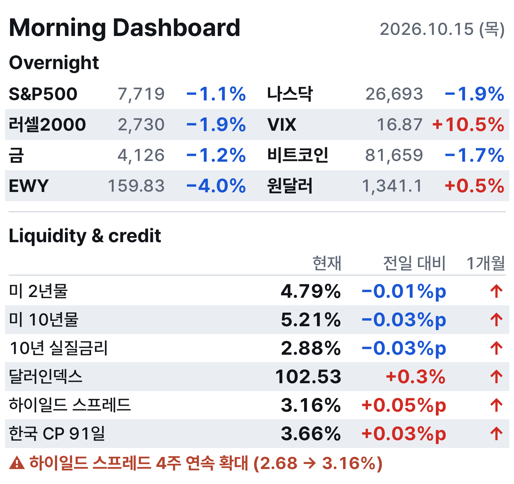
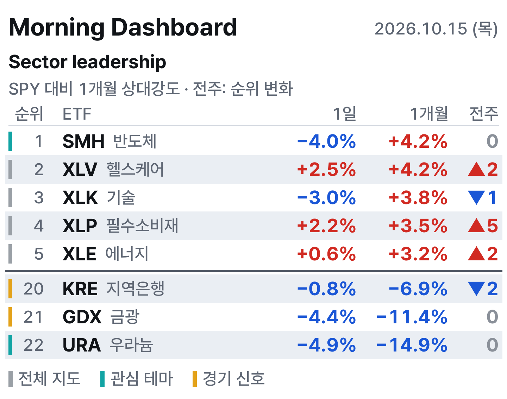
섹터 전체표
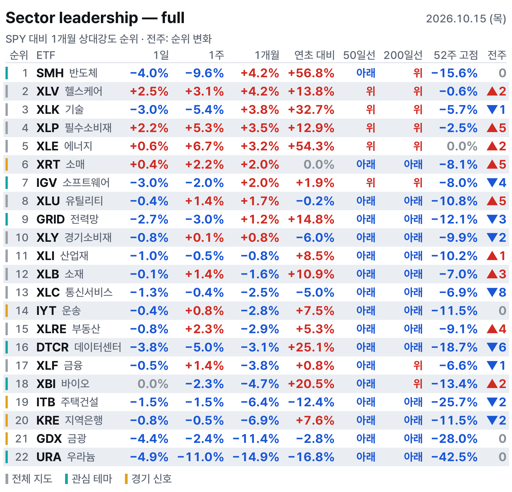
1Fear & Greed
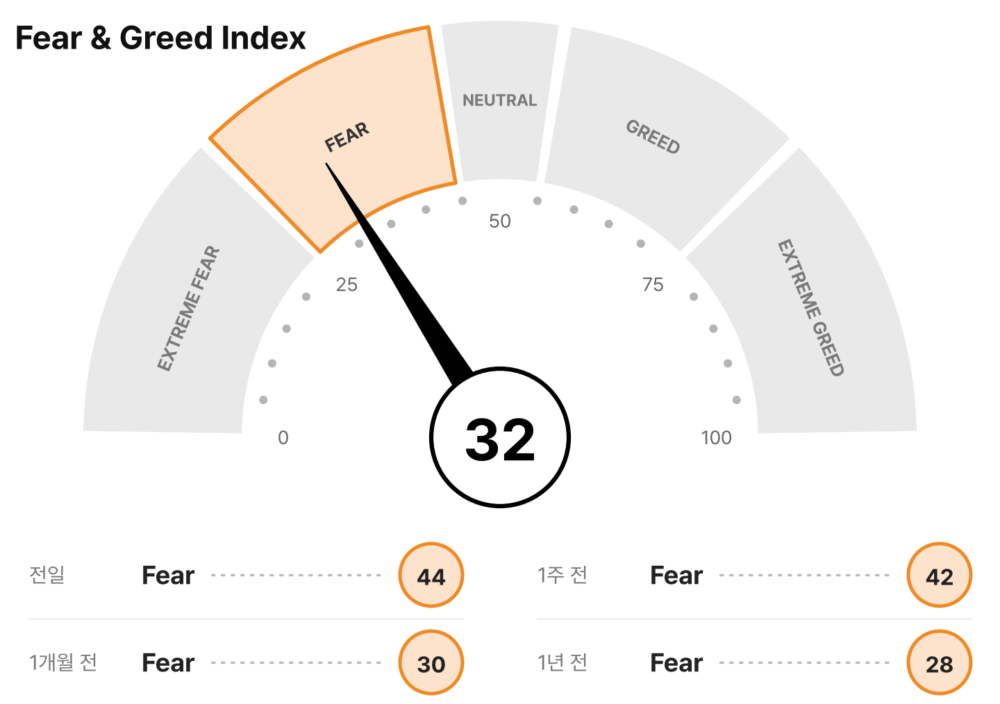
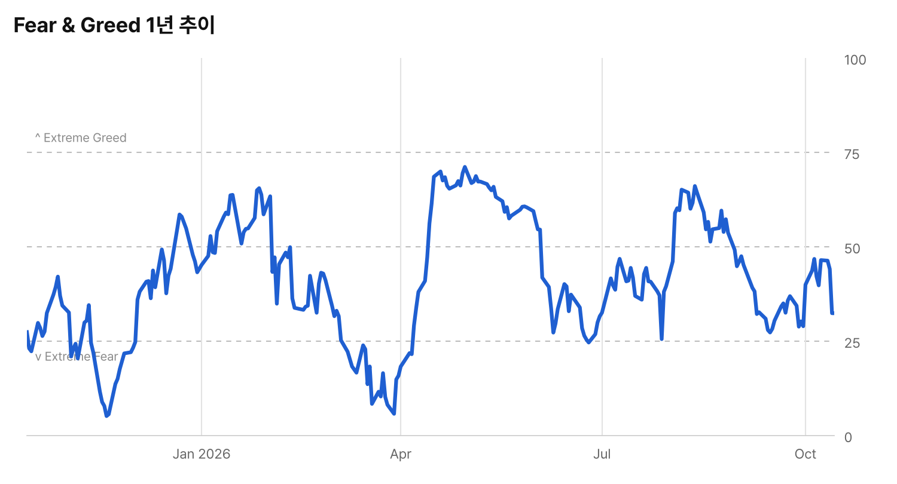
2블로그 새 글 (최근 24시간)
블로그 새 글 14건
메르의 블로그 (2건)
진리 그리고 투자 (1건)
피우스의 책도둑 & 매거진 (10건)
- [스펜서 자캅] 하바네로 고추와 투자 포트폴리오: 강렬한 전략일수록 조금씩 섞어라
- [CWS 주간 미국 시장 리뷰] 3분기 실적 시즌 개막: 대형 은행 실적 향방과 고금리에 흔들리는 주택 시장
- [오늘의 차트] 국채 금리 5.22% 돌파... 펀드매니저들 ‘5.9% 돼야 주식 버리고 채권 옮길 것’
- '버핏의 시대' 너머: 그렉 아벨이 이끄는 버크셔 해서웨이의 포트폴리오 재편
- 미국 무역 적자 35년의 변천사: 원유에서 기계, 그리고 AI 반도체로
- [예측 시장] 일확천금의 꿈: 비합리적이라도 괜찮아, 우리는 ‘희망’을 사고 있으니까
- [예측 시장] 법정이 카지노로? '재판 결과 베팅'이 초래한 배심원 오염과 윤리적 경고
- [낙관론자의 승리] 한 권의 책이 이끌어낸 기적: 전화기 탄생 뒤에 숨겨진 이야기
- 대박 종목 쫓다 상처받지 않는 '5% 분산 투자 원칙'
- [마크 헐버트] 4주년 맞이한 미국 증시 강세장, 과연 너무 길고 많이 올랐을까?
Rafiki Research (1건)
3핀비즈 S&P 500 히트맵
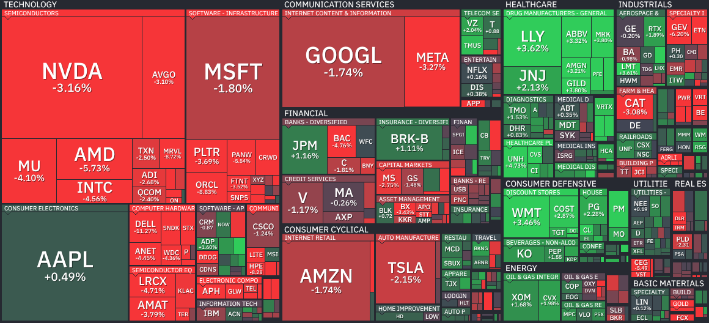
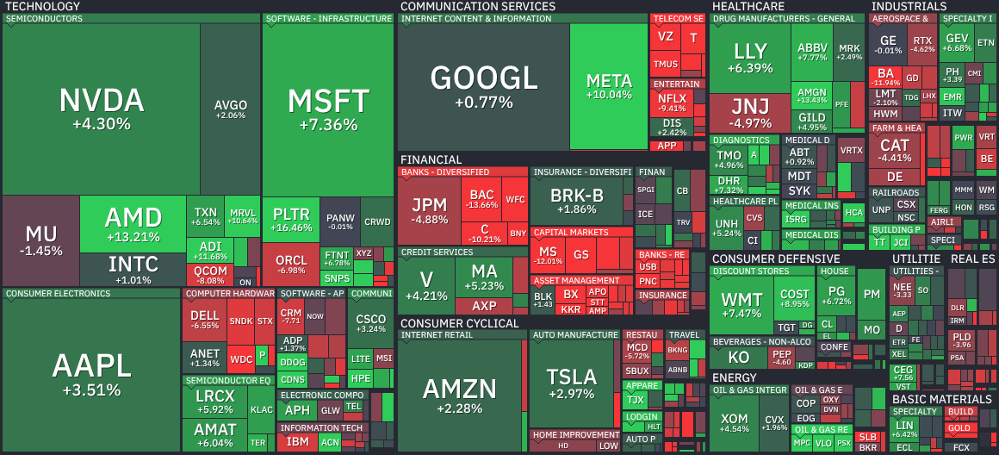
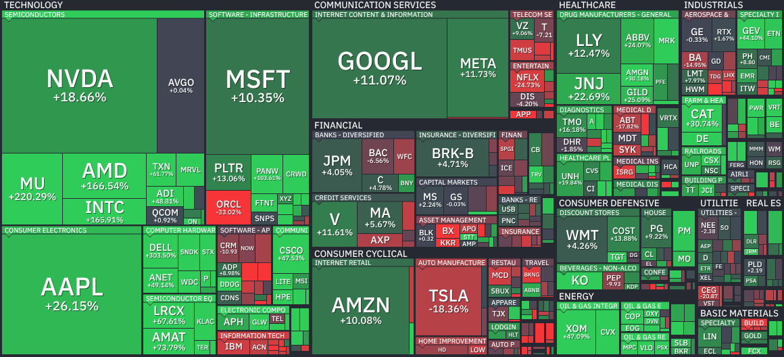
4미 천연가스
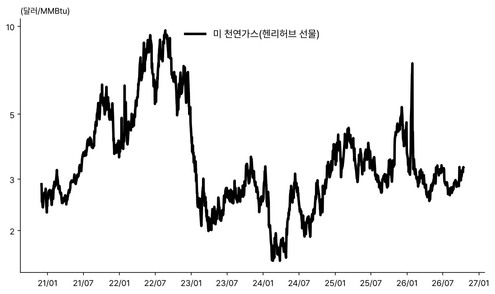
5차트
미 10Y-2Y 스프레드

주요국 10년 국채금리
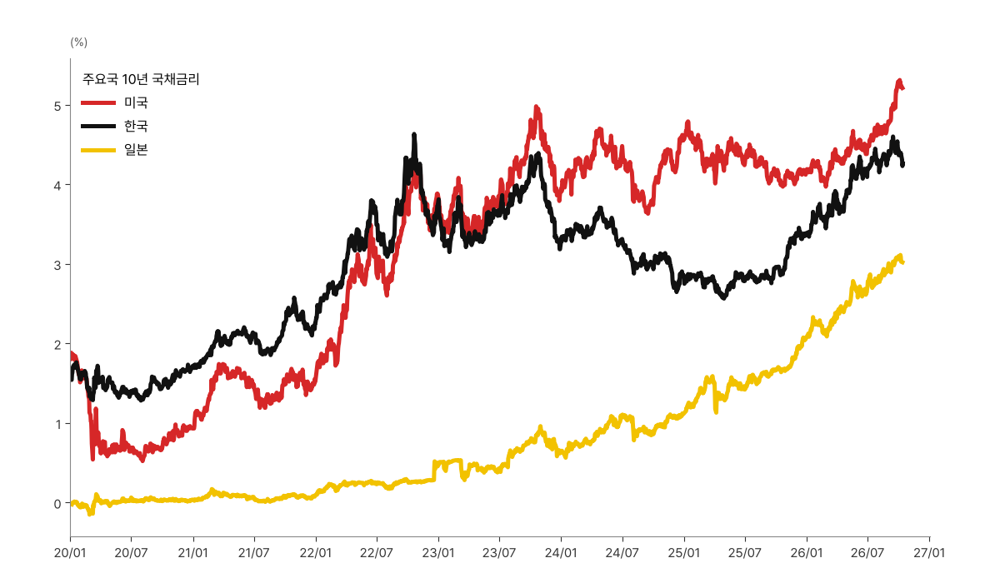
유가
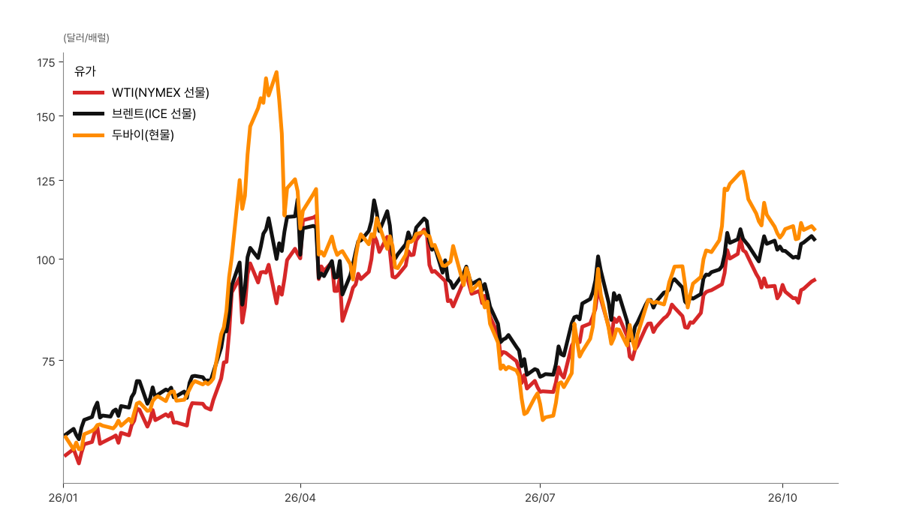
미 가솔린 소매가격

데이터센터 ETF·엔비디아
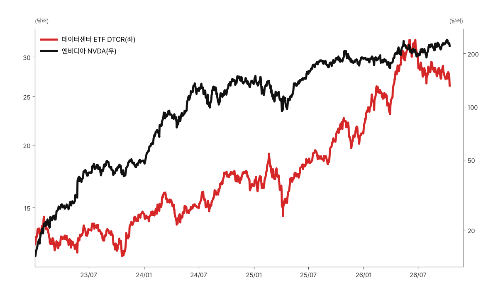
바이오테크·반도체 연초 대비
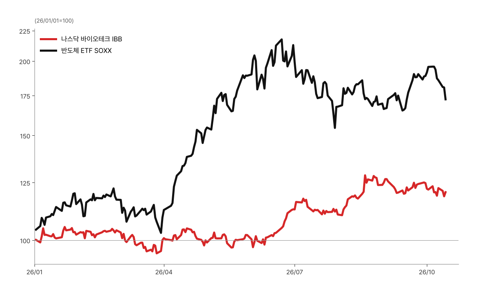
6메모리
DRAM ETF $52.84 (-3.4%, 10/13)
· 좌수 4억 749만좌 (-463만좌, 10/13)
SK하이닉스 2배(7709) HK$31.82 (-10.1%, 10/12)
· 좌수 9억 4,300만좌 (+5,350만좌)
삼성전자 2배(7747) HK$66.70 (-7.7%, 10/12)
· 좌수 1억 50만좌 (변화 없음)
DRAM 현물가(세션 평균)
DDR5 16Gb $60.100 (+0.33%)
DDR4 16Gb $83.611 (-0.30%)
DDR4 8Gb $45.971 (-0.19%)